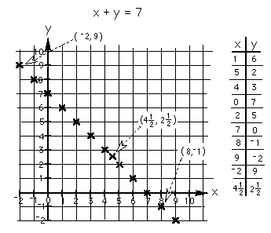
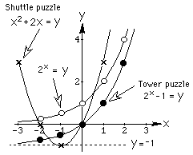
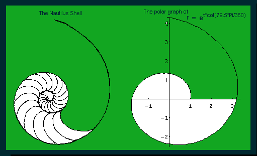
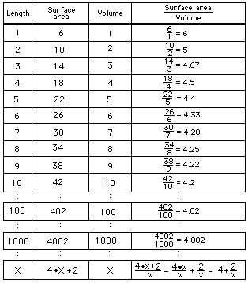

Answers for Chapter 6 Sample Problems
1. The rule can be written various ways, like x+x+3=y and 2x+3=y
2. Below is the graph of x+y=7

Notice, I will get young people into negative numbers and adding
mixed numbers while doing the graphs. Is there a pattern to the graph?
Follow the pattern. I may have to show a youngster how to
write negative 1 or 2 1/2. They pick up on this quickly
though!
The graphing is a very important piece of mathematics involving
arithmetic (getting the numbers), algebra (the equation), and
geometry (the points). Now we can ask some questions, like what
could you change? How could you make the graph different? What if
you graphed x - y = 2 or xy=12 ? Try these.
3. and
4. These are the graphs of the shuttle puzzle (a parabola), tower
puzzle (an exponential function) and another to compare with
these.

5. For the Nautilus shell,
 the ratio of
radius vectors
every 360 degrees is a constant, about 3.2. My students average their
mesurements and get pretty close to that (within 10%). The angle
comes out another constant, about 79.5 degrees; this spiral is called an
equiangular spiral because of this. A number of young people have worked
on these problems of the Nautilus shell. Vickie, a 9th grader at the
time, used the half-shell, and studied the volume increase from section
to section. I have a full and half shell in my
"Math Room". The shell is beautiful and mathematical, that's why it is my
logo. The shell on my first web site page is a copy of a watercolor
painting I did of the shell. The rubbing is on the left. The polar equation of the shell spiral is r =
et * cot (79.5*Pi/180) The polar plot of this
equation in Mathematica looks like that at right above. You can see when t
=0, r =1. A 360 degree
turn (t=2*Pi) gives an r of about 3.2, and the Nautilus grows at this constant
ratio throughout (as mentioned above). (See Frank
Land's book "The Language of Mathematics", Doubleday, 1963)
6.

Notice that in the chart above, we get an
infinite sequence whose limit is 4. As the animal gets smaller, like a
mouse, its SA/Vol ratio is largest (the white or smallest rod). The skin
(measured by the surface area) acts to rid the body of perspiration, and
the mass (proportional to the volume) is a measure of the heat
production. If the mouse ran around during sunny days, it would lead to
"excessive transpiration" and die. That's why rodents are noctunal
animals. This ratio is also why we grate cheese before putting it on
spaghetti and one person told me he likes thin spaghetti because the
cheese gets on more of it!
Back to problems from Ch. 6
To order Don's
materials
To choose sample problems from
other chapters
See
Patterns in Graphs
Mathman home